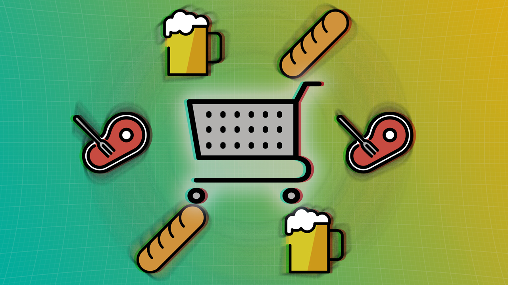
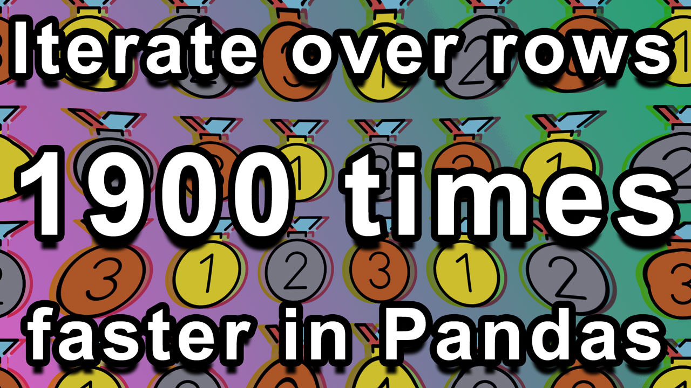
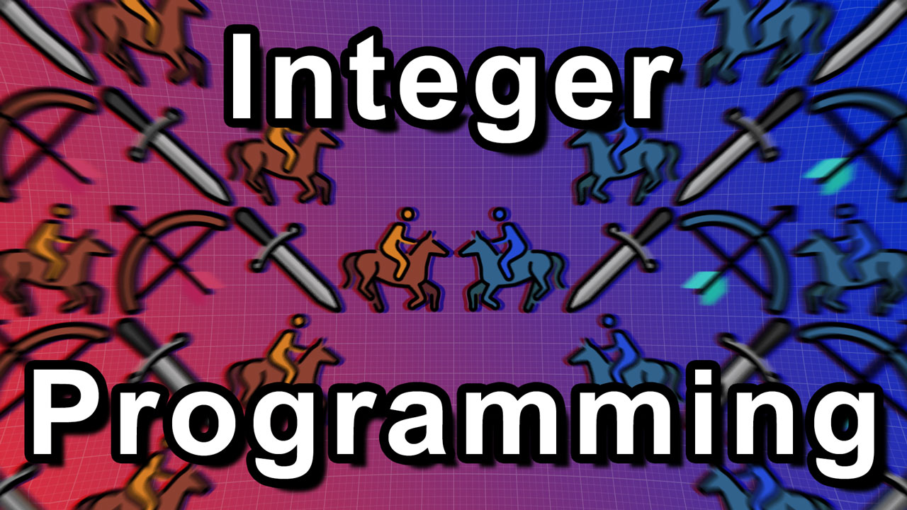
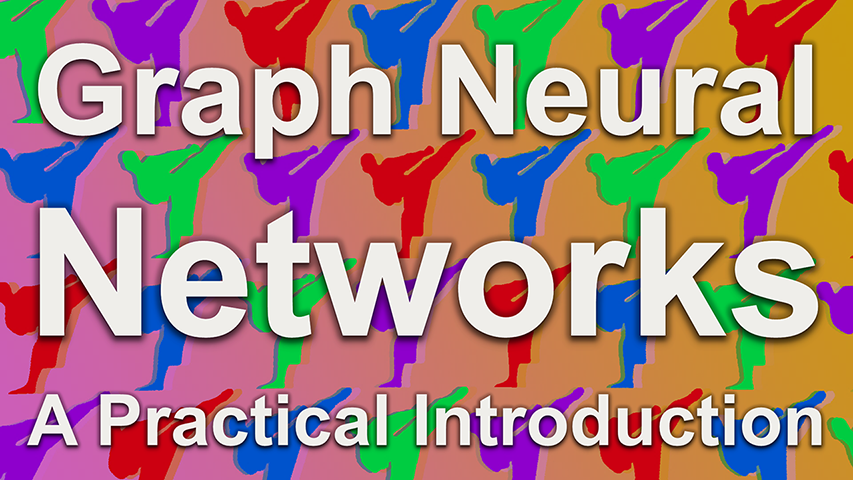
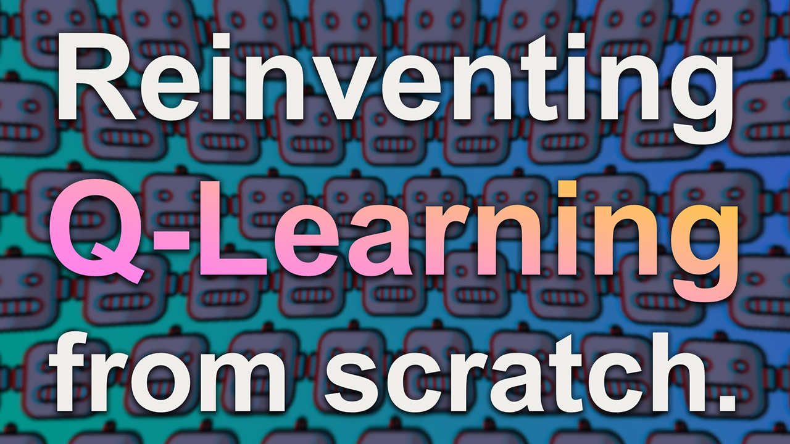

Reinforcement Learning and Behavior Cloning in Python with MineRL

The Programming Paradigm to Find One Solution Among 8,080,104 Candidates
Graph Neural Network Course: Chapter 4
Graph Neural Network Course: Chapter 3
The difference between tensors, arrays, and matrices

Never use iterrows and itertuples again!
Graph Neural Network Course: Chapter 2

Mixed Integer Programming for optimization with Google OR-Tools
A guide to mathematical optimization with Google OR-Tools

Graph Neural Network Course: Chapter 1

Train an AI to solve the Frozen Lake environment